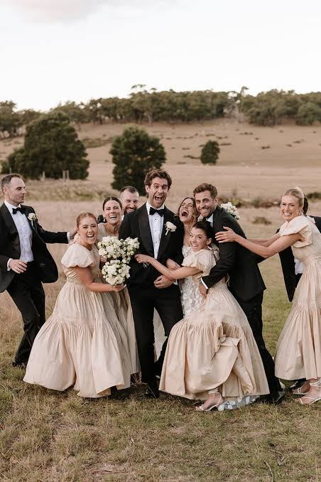

Francis Dey | WDD 130

Hello! My name is Francis Dey, and I am from Ghana. I enjoy learning about web development and creating websites using HTML, CSS, Git, and GitHub. I am passionate about technology and software development because I enjoy solving problems and building useful applications. Through WDD 130, I am strengthening my skills in front-end web development while preparing for a future career as a software developer. I look forward to continuing my learning journey and building projects that make a positive impact.